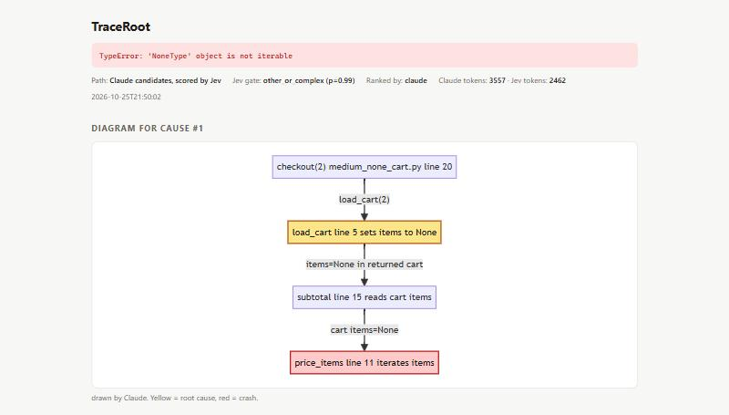

TraceRoot
Trace a Python error back to its root cause, with fewer agent tokens. A coding agent runs
traceroot on a failing command and gets a ~60-token ranked answer, instead of reading the
traceback and several files.
How it works
Two models, each with one small job. Plain Python does everything else and checks everything they return.
Jev (TypeSafe AI): decides
A cheap gate: is this a simple error whose fix is on the crash line? If yes (p ≥ 0.8), TraceRoot answers immediately and Claude is never called. Otherwise Jev gives a second opinion on Claude's candidates.Claude (Haiku): generates
3–6 candidate root causes as strict JSON, from the traceback, the crash windows, and the definitions the failing code uses. It never sees whole files.Plain Python: checks
Parses tracebacks and reads only safe project files (never.env or keys). It follows functions,
constants, and methods even after they've returned, validates every file:line, ranks the causes, and saves them so
traceroot next is free.What the agent sees
$ traceroot analyze --run "python main.py" [1/4] none_value (claude=0.60, Jev agrees) tests/fixtures/medium_none_cart.py:5 cause: load_cart replaces empty item list with None fix: Keep items as an empty list (for example, default to [] instead of None) rather than converting falsy values to None. more: `traceroot next`
The crash is in price_items (line 11), three calls away. The bug is in load_cart
(line 5), which isn't in the traceback at all.

traceroot view for humans: a call-path diagram drawn by Claude (yellow = root cause, red = crash).
Open the real view page.Benchmark
54 bugs planted (one mutation each) in 6 multi-file Python projects of 170–401 lines. The mutated line is the ground truth. Baseline = the same Claude model, same prompt, given the traceback plus every project file in full. Hit = right file, line within ±1.
| Bugs | Cases | TraceRoot correct | Baseline correct | TraceRoot tokens | Baseline tokens | |
|---|---|---|---|---|---|---|
| Simple (Jev gate alone) | 18 | 18/18 | 17/18 | 1,968 | 8,202 | −76% tokens |
| Complex (Claude + Jev) | 36 | 29/36 | 30/36 | 9,577 | 8,830 | +8% tokens |
| All | 54 | 47/54 | 47/54 | 7,040 | 8,621 | −18% tokens |
| Bug in a different file from the crash | 18 | 15/18 | 15/18 | – | – | same |
| Held-out project (written before the last changes) | 9 | 6/9 (top-3: 9/9) | 6/9 (top-3: 8/9) | 6,568 | 8,171 | −20% tokens |
Cost as projects grow
Sending every file gets more expensive with every file. TraceRoot's Claude call stays about flat.
| Project | Lines | Claude + every file | TraceRoot's Claude call | TraceRoot avg per bug |
|---|---|---|---|---|
| shop | 170 | 6,462 | 5,177 | 7,455 |
| bank | 277 | 8,171 | 5,223 | 6,568 |
| library | 291 | 8,327 | 5,957 | 6,812 |
| planner | 315 | 8,617 | 6,223 | 7,170 |
| logs | 357 | 8,924 | 5,449 | 6,998 |
| gradebook | 401 | 11,224 | 5,683 | 7,239 |
How the benchmark improved TraceRoot
Every change sat behind a setting and was kept only if the numbers didn't get worse.
| Version | Change | What the data said | Kept? |
|---|---|---|---|
| v1 | Only read files in the traceback | 4/9 on the first project vs. 9/9 for the baseline: bugs were in code that had already returned | – |
| v2–v4 | Follow the definitions the failing code uses (Python ast) | first project went to 8/9 with ~1k tokens of code | yes |
| v5 | Wider gate (0.8 → 0.65) | let one wrong quick answer through | reverted |
| v5 | Claude orders the causes; Jev = agreement check | Jev's order was worse (18/30 vs. 22/30) | yes |
| v5 | Jev sees only crash windows | −0.9k tokens (simple), −1.6k (complex) | yes |
| v6 | Follow obj.method(); fuzzy file paths | dev set 37 → 41 of 45 at no token cost; held-out miss → rank 2 | yes |
Honest limits
- Complex errors on small projects cost ~8% more model tokens than sending everything, with one fewer correct answer (29/36 vs. 30/36).
- In one end-to-end agent trial (headless Claude Code, 170-line project), the agent found and used TraceRoot on its own, but used more total tokens (246k vs. 207k), because extra agent turns cost more than the file reading saved.
- 54 cases, each run once, written by the same model family the tool uses. Only the 9 held-out cases were never tuned on.
- Code context is for Python tracebacks only, so far.
Use it with your agent
pipx install git+https://github.com/SZBro/traceroot.git mkdir -p ~/.traceroot && echo "TYPESAFE_API_KEY=your-key" >> ~/.traceroot/.env traceroot install-skill # Claude Code skill for all your projects traceroot check # verify the setup
Needs Python 3.10+ and Claude Code installed and logged in. Full steps, including other agents (Codex, Cursor, Copilot), are in the README.